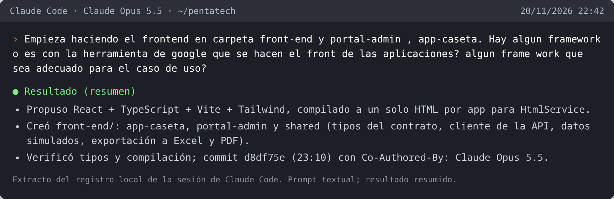
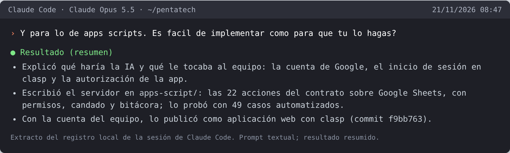
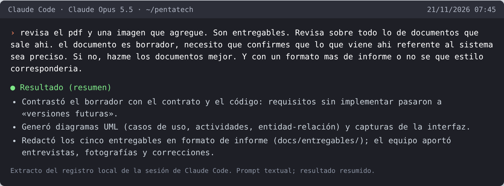
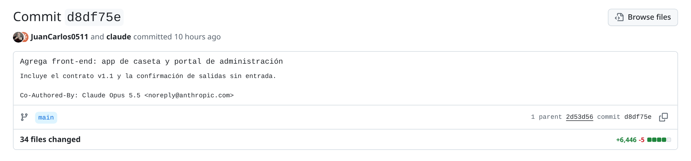

Declaración y Evidencias de Uso de IA · Control de Acceso Vehicular UAT CUTM Sur
UNIVERSIDAD AUTÓNOMA DE TAMAULIPAS
Facultad de Ingeniería Tampico · Centro Universitario Sur
Ingeniería en Sistemas Computacionales
Sistema de Control de Acceso Vehicular para la UAT CUTM Sur
Solución basada en Google Apps Script y Google Sheets
Declaración y evidencias de uso de IA
Evento
Concurso Hackatón · Facultad de Ingeniería Tampico
Equipo
Juan José Santiago Cruz Jared Said Constantino Lemus Juan Carlos Guzmán Antonio Jocelyin Mateo Saldierna Roberto Campillo Martínez
Versión
1.0
Tampico, Tamaulipas · 21 de noviembre de 2026
Índice
1. Herramientas utilizadas
Herramientas de inteligencia artificial
Herramienta
Uso
Claude Code, con el modelo Claude Opus 5.5 (Anthropic)
Asistente en la terminal, con acceso al repositorio del proyecto. Se usó para analizar las bases, proponer la arquitectura, definir el contrato de API, programar la interfaz web y el servidor de Apps Script, elaborar diagramas y dar formato a la documentación. Cada resultado fue revisado por el equipo antes de integrarse.
Claude Code guarda localmente el registro de cada sesión: prompts, acciones realizadas y respuestas. Las evidencias de este documento provienen de ese registro y del historial público del repositorio.
2. Actividades en que se usó IA
El uso de la IA se concentró en la investigación y la implementación del proyecto. El trabajo de campo, las entrevistas, las fotografías, las decisiones de alcance y la validación de los resultados los realizó el equipo.
Uso de IA por actividad
Actividad
Uso de la IA
Trabajo del equipo
Análisis
Primera lectura de las bases, notas de requisitos y detección de ambigüedades.
Cuestionario, entrevistas, fotografías y validación de requisitos.
Diseño
Propuesta de arquitectura, contrato de API, maquetas de interfaz y diagramas UML.
Decisiones de autenticación, alcance y cambios a la interfaz.
Programación
Interfaz web (app de caseta y portal) y servidor en Google Apps Script, con pruebas automatizadas.
Revisión, pruebas, publicación con la cuenta del equipo, configuración de AppSheet y despliegue del backend.
Documentación
Revisión de consistencia entre documentos y código, redacción y formato de los entregables.
Contenido de entrevistas, fotografías, correcciones y revisión final.
3. Prompts y resultados
Registro de sesiones con IA
Fecha y hora
Actividad
Prompt
Resultado
20/11/2026 20:53
Análisis y diseño
«Necesitamos definir un stack para un portal web. Inicia el repositorio github con un nombre de proyecto acorde. Revisa la imagen y docs y toma notas…»
Lectura de las bases, notas de requisitos, detección de ambigüedades (los dos significados de «tipo de usuario») y repositorio creado (commit 8485a5b).
20/11/2026 21:03
Diseño
«Define un contrato de endpoints para que tanto frontend como backend pueda trabajarlo en simultaneo y no tener disparejos…»
Contrato de API v1.0 con 22 acciones, permisos por rol y códigos de error (commit 2d53d56).
20/11/2026 21:46
Diseño
«dame sugerencias de interfaces»
Maquetas de 4 pantallas de caseta y 5 del portal ligadas a las acciones del contrato.
20/11/2026 22:10
Diseño
«Moderniza el web. Usa la skill de diseño de web que se instaló»
Rediseño visual con estilo de señalización vial.
20/11/2026 22:26
Diseño
«En la aplicación de caseta podríamos modernizar el acceso a cerrar sesión o iniciar sesión lo más simple posible pero sin header…»
Propuesta de «Comenzar turno» y «Terminar turno» para el teléfono compartido de la caseta.
20/11/2026 22:42
Programación
«Empieza haciendo el frontend en carpeta front-end y portal-admin, app-caseta…»
App de caseta y portal de administración en React y TypeScript, revisados con TypeScript y compilación (commit d8df75e).
21/11/2026 07:40
Integración
«Revisa si hay actualizaciones de otra rama o algo»
Revisión de la rama del backend e integración de las ramas en main.
21/11/2026 07:45
Documentación
«revisa el pdf y una imagen que agregue. Son entregables…»
Contraste del borrador con el sistema, diagramas UML y redacción de los entregables en formato de informe.
21/11/2026 08:47
Programación
«Y para lo de apps scripts. Es facil de implementar como para que tu lo hagas?»
Servidor de Apps Script con las 22 acciones sobre Google Sheets, 49 pruebas automatizadas y publicación como aplicación web (commit f9bb763).
4. Capturas y evidencias
Las figuras 1 a 4 son extractos del registro local de las sesiones: muestran el prompt textual y un resumen del resultado. La Figura 5 es una captura del repositorio público, donde los commits generados con apoyo de la IA llevan la marca Co-Authored-By: Claude Opus 5.5.
Extracto del registro de la sesión: definición del contrato de API.

Extracto del registro de la sesión: programación de la interfaz web.

Extracto del registro de la sesión: servidor en Google Apps Script.

Extracto del registro de la sesión: revisión y redacción de los entregables.

Commit d8df75e en el repositorio público, con la marca Co-Authored-By: Claude Opus 5.5.
5. Beneficios obtenidos
La interfaz y el servidor se construyeron en paralelo contra un contrato común, sin desajustes de nombres ni de datos.
Las ambigüedades de las bases (por ejemplo, los dos significados de «tipo de usuario») se detectaron desde el inicio.
El servidor se probó con casos automatizados antes de publicarse.
Los documentos se contrastaron con el sistema construido, lo que permitió corregir requisitos que no coincidían.
6. Limitaciones encontradas
La IA no sustituye el trabajo de campo: las entrevistas, sus respuestas y las decisiones sobre el alcance son del equipo.
Sus propuestas requirieron revisión humana. Varios requisitos del primer borrador no coincidían con lo construido y se movieron a versiones futuras, y algunos datos de las entrevistas se corrigieron contra las notas de campo.
Partió de supuestos que el equipo tuvo que corregir; por ejemplo, que las cuentas institucionales de la UAT eran de Google, cuando son de Microsoft.
No puede operar cuentas del equipo: la creación del proyecto, la autorización y la publicación requirieron que un integrante iniciara sesión.
Las metas de rendimiento y usabilidad deben validarse con el personal de las casetas.
7. Porcentaje estimado de apoyo
Estimación del equipo a partir del registro de sesiones y del historial del repositorio. Se considera apoyo de la IA las versiones iniciales que generó, y trabajo del equipo el trabajo de campo, las decisiones, la revisión, las pruebas y las correcciones.
Estimación del apoyo de la IA por actividad
Actividad
Porcentaje
Base de la estimación
Análisis
35 %
La IA hizo la primera lectura de las bases y propuso requisitos; el cuestionario, las entrevistas, las fotografías y la validación de requisitos fueron del equipo.
Diseño
55 %
La IA propuso el contrato de API, las maquetas y los diagramas; el equipo decidió la autenticación, el alcance y los cambios a la interfaz.
Programación
70 %
La interfaz web y el servidor de Apps Script se generaron con IA y el equipo los revisó, probó y publicó; la configuración de AppSheet y el despliegue del backend fueron del equipo.
Documentación
60 %
La IA redactó y dio formato a los documentos a partir del contenido del equipo: entrevistas, fotografías, decisiones y correcciones.